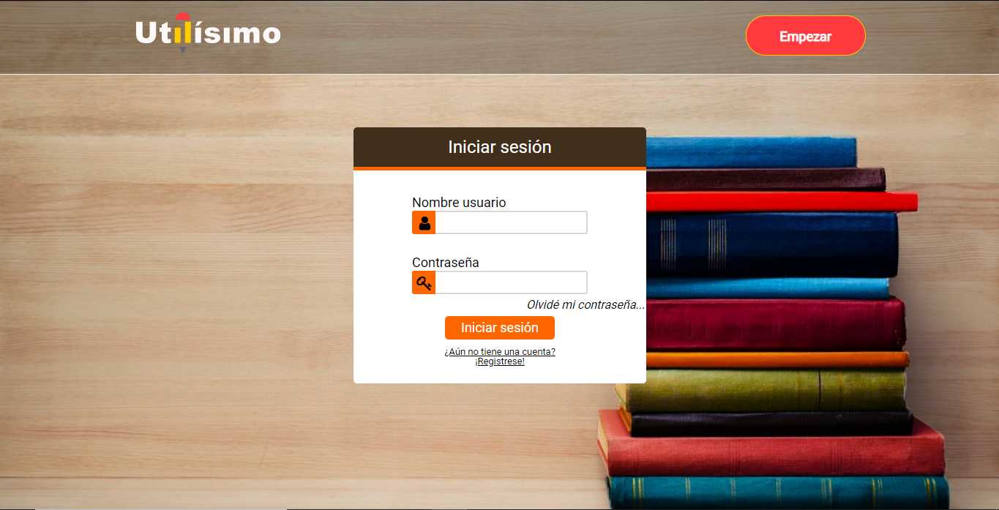

Proyecto 1

Este proyecto fue creado con un grupo de estudiantes, yo incluido.
Este proyecto se trataba de brindar servicios de ventas de utensilios a instituciones educativas.
El proyecto tenia varios tipos de usuarios, administrador, director, funcionarios públicos y padres o encargados del alumno cada uno con sus funcionalidades.
El principal usuario era los padres o encargados, la idea principal de que usaran este sistema, era que puedan comprar los utensilios escolares y los uniformes en la misma institución educativa, en la comodidad de su casa, solo de recoger los utensilios escolares en el primer día de clases.
También, estos usuarios tenían las opción de reservar una cita, para obtener las medidas de los uniformes de los estudiantes.
Los usuarios funcionarios públicos se encargaban de administrar el grupo de estudiantes (usuario padre o encargado) asignado en el sistema, y así asignada una lista de utensilios escolares a los estudiantes.
Los directores administraba un grupo de estudiantes y los asignaba a un funcionario público. Se encargaba de administrar los productos que vendía la institución educativa, también, registraba los proveedores de los productos y administraba los funcionarios públicos.
Y por último, los usuarios administradores, se encargaban de la administración de las instituciones educativas, registraba, modificaba o eliminaba instituciones educativas. También se encarga de registra los directores de cada institución educativa.
¿Qué apredí de este proyecto?
En este proyecto aprendí los básico de comó hacer una página web.
Al construir el proyecto, desarrollé HTML para crear las páginas.
Se usó CSS para los estilos de la página web. También se usó JavaScript para la lógica de la página web y como base de datos MySql.